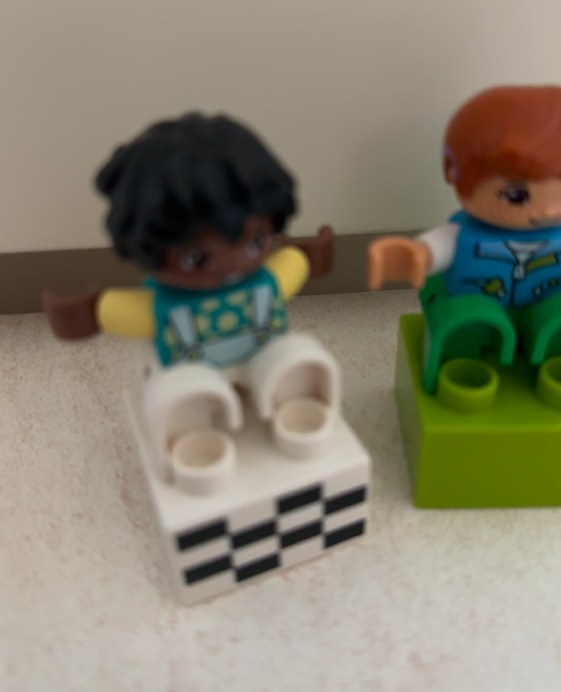
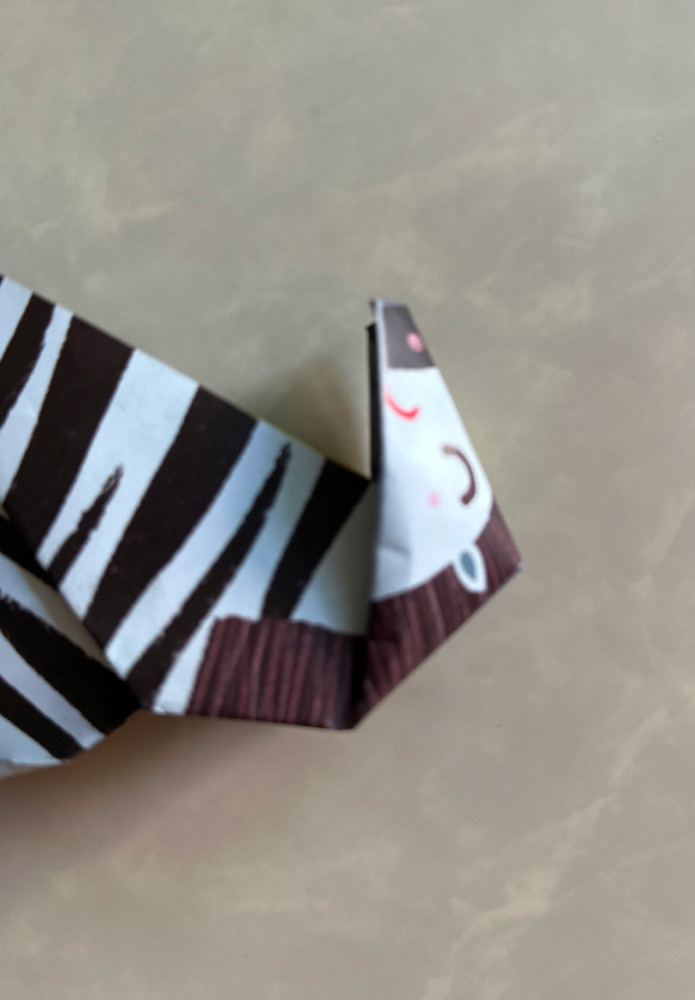
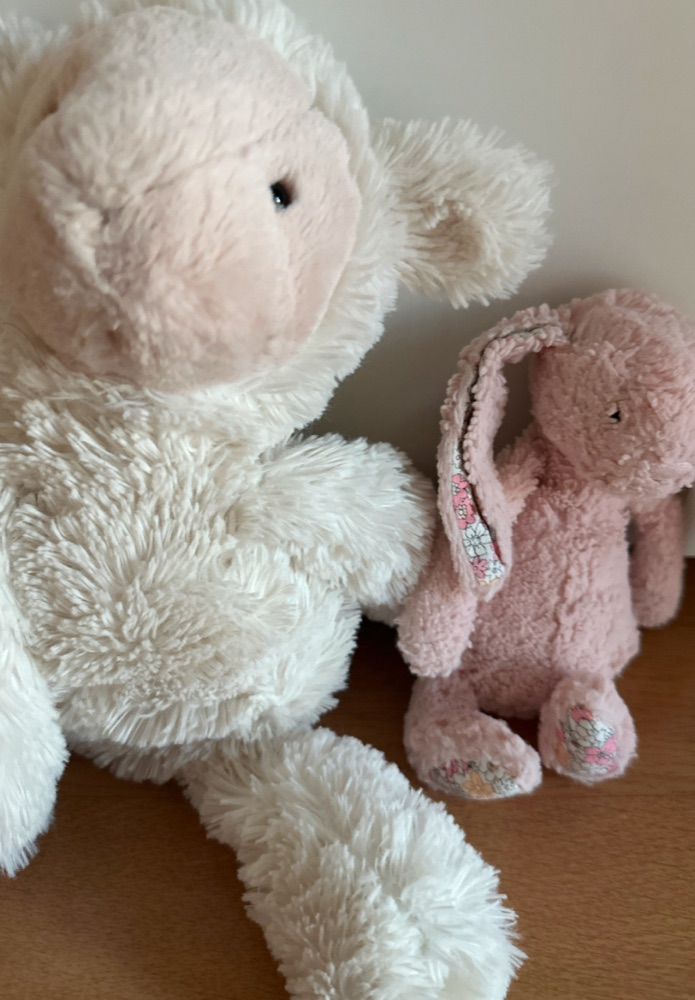

Honest Camera は小さな手のための本物のカメラ。お子さんが黄色いボタンをポンと押すと — カシャ！ — 写真はおうちの写真ライブラリへ安全に保存されます。ほかのボタンはありません。切り替えるものも、買うものも、迷子になる場所もありません。

画面のボタンはひとつだけ。カシャという音、ピカッと光る画面、手に伝わる振動 — 撮れたことが子どもにもすぐ分かります。
保存ボタンも、確認のポップアップもありません。撮った瞬間、家族の写真ライブラリへそのまま入ります。
撮った写真が大きく表示されます。赤い×を押せばまたカメラに戻る。アプリはこれでぜんぶです — 本当に。
ふつうのカメラアプリにはボタンが何十個もあります。幼児の指には、そのすべてが事故のもと。Honest Camera は逆につくりました — 危ないものをぜんぶ取り除いて、黄色いシャッターだけを残しました。


写真がアプリの中に閉じ込められません。撮った瞬間、家族の写真ライブラリへ元の画質のまま保存されます。
サブスクもコインも「プレミアム」もなし。アプリの中に買うものも、押してしまう広告もありません。
Apple の「アクセスガイド」(サイドボタン3回) でこのアプリにロックする方法を、オンボーディングで順番にご案内します。
幼児は音量ボタンと電源ボタンを区別できず、画面が消えてしまいます。だからシャッターは画面の中だけ。
フィルターも AI 補正もステッカーもなし。子どもの目に見えたままが写真になります。だから名前が Honest。
日本語 · English · 한국어 · 繁體中文。ぬいぐるみを並べて撮るときは横向きでもどうぞ。